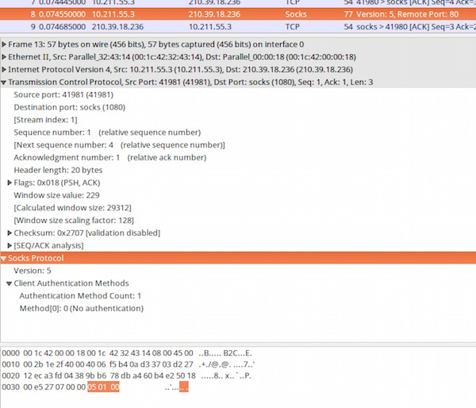
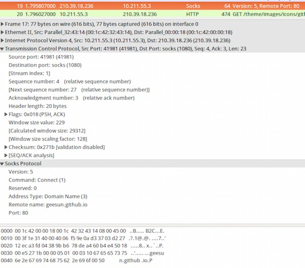
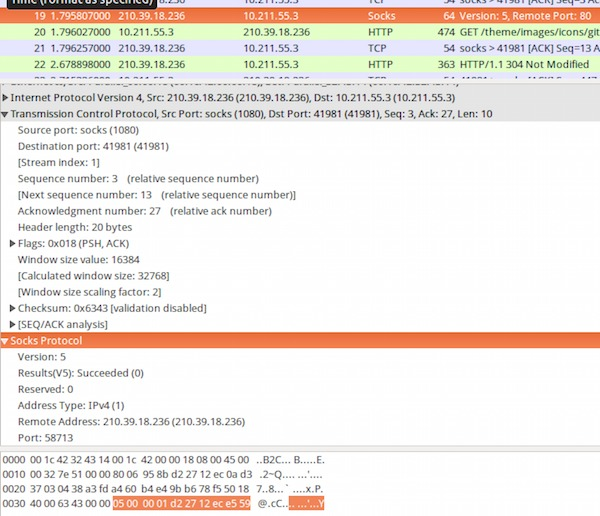
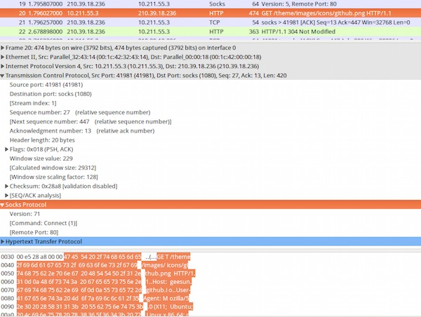
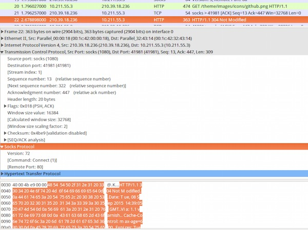

简介
要上google就是要翻墙，最基本的就是要用到代理协议，其中一个就是SOCKS 5代理协议。SOCKS 5是一种网络传输协议，SOCKS协议位于传输层(TCP/UDP等)与应用层之间，所以能代理TCP和UDP的网络流量，对于它之下的网络流量，就无能为力了。
SOCKS是怎么工作的呢，这里举个例子：
A想访问B站点，但是A和B站点之间有一个防火墙阻止A直接访问B站点，在A的网络里面有一个SOCKS代理C，C可以直接访问B站点，所以A通知C他想访问B站点，C就为A和B之间架起一条沟通的通道。
协议
协商
客户端首先向SOCKS服务器自己的协议版本号，以及支持的认证方法。SOCKS服务器向客户端返回协议版本号以及选定的认证方法。
认证
客户端根据服务器端选定的方法进行认证，如果选定的方法是02,则根据RFC 1929定义的方法进行认证。RFC 1929定义的密码是明文传输，安全性较差。
请求
一旦指定认证方法的协商过程完成, 客户端发送详细的请求信息。经常使用 SOCKS 代理服务器的同志们会发现一种现象，即使 SOCKS 代理服务器设置正确，某些网站仍然无法访问,一般来说就是DNS污染造成的。SOCKS 5是通过将域名直接提交给 SOCKS 服务器来进行远端 DNS 解析的，即 Address Type 0x03。 DNS 服务是 Internet 的基础服务，要求 DNS 解析应当尽量地快，所以浏览器默认不会使用远端 DNS 解析。在Chrome的SwitchySharp 和Firefox里面的FoxyProxy可以支持远端DNS解析，可以避开DNS污染问题。
SOCKS 5 协议请求方法又分如下三种：
Connect
比较常见的请求，客服端请求服务器发起链接到目标主机，目标端口的代理。SOCKS 服务器将使用目标主机，目标端口, 客户端的源地址和端口号来评估 CONNECT 请求是否通过。成功之后后续流量都会被转发到目标主机的目标端口。
Bind
BIND 请求通常被用在那些要求目标主机连接客户端。FTP 是一个典型的例子。它建立一个从客户端到服务器的连接来传送命令和状态，而使用另一个从服务器到客户端的连接来传输请求（如LS、GET、PUT）的数据。建立流程如下：
- Client随BIND请求，发送其要绑定的地址和端口。
- Server返回其创建的监听端口的地址和端口。
- Server创建的监听端口有连接后，返回该连接的源地址和端口。
- Server端将上述连接中的流量，发送给client的监听端口。
UDP ASSOCIATE
UDP ASSOCIATE 请求通常是要求建立一个 UDP 中继来处理到来的 UDP 数据包。DST.ADDR 和 DST.PORT 字段包含客户端所希望用来发送 UDP 数据包的 IP 地址和端口号。服务器可以使用这个信息来限制进入的连接。如果客户端在发送这个请求时没有地址和端口信息，客户端必须用全 0 来填充。
当与 UDP 相对应的 TCP 连接中断时，该 UDP 连接也必须中断。
包分析
客户端向服务器发送协议版本号及支持认证方式

服务器回应版本号及选定认证方式

客户端发送Connect请求

服务器对Connect的响应

客户端发送被代理的数据

服务器响应被代理的数据

注意：Version 72 不是真的Version 为72， 而是wireshark解析问题，从72开始都是被代理的数据
参考
RFC1928
RFC1929
comments